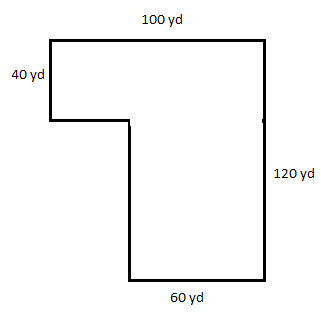
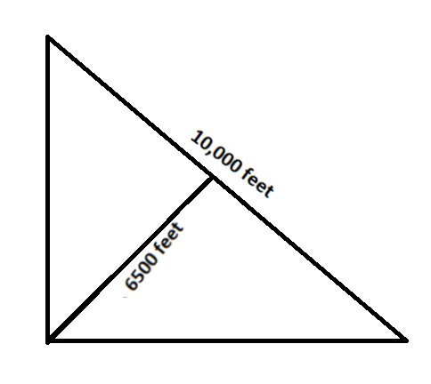
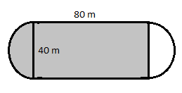
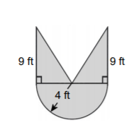
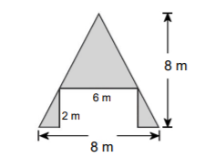

Measurement and Geometry Unit
Test 3 Review
Dimensional Analysis for 10 points:
How many minutes is a student in class one semester if the student takes 12 credit hours? (Assume each class is one hour and 1 semester = 14 weeks.)
\(\frac{12\;credit\;hours}{\;1\;week}\times\frac{14\;weeks}{\;semester}\times\frac{60\;mins}{1\;hour}\)
10,080 minutes
Dimensional Analysis for 20 points:
How many cubic feet of dirt fit in a crate with a volume of 14,400 cubic inches?
\(\frac{14,400\;in^3}{\;1\;crate}\times\frac{1^3\;ft^3}{\;12^{3\;}in^3}=8.3 \;cubic \;feet\)
Dimensional Analysis for 30 points:
A sprinter runs 100 meters in 11 seconds. What is the sprinter’s speed in mph?
\(\frac{100\;m}{11\;sec}\times\frac{60\;sec}{1\;min}\times\frac{60\;min}{1\;hr}\times\frac{1\;km}{1000\;m}\times\frac{1\;mile}{1.61\;km}=20.33\; mph\)
Perimeter and Area for 10 points:
How much fencing is needed to enclose the park?
\(100+120+60+80+40+40=440\; yards\)
Perimeter and Area for 20 points:
How many square miles are included in the state park shown?
\(A=\frac12bh\)
\(A=\frac12(10,000)(6500)=32,500,000\;ft^2\)
\(\frac{32,500,000\;ft^2}{triangle}\times\frac{1^2\;mile^2}{5280^2\;ft^2}=1.17 \;square\; miles\)
Perimeter and Area for 30 points:
Find the area of the shaded region inside the track:
Area of the rectangle: \(A=lw=40(80)=3200\;m^2\)
Area of the circle: \(A=\pi r^2=\pi(20^2)=1256.64\; m^2\)
Area of half the circle is \(628.32 \;m^2\)
\(3200+628.32=3828.32\;m^2\)
Surface Area and Volume for 10 points:
Find the amount of cardboard used to make a cereal box 30 cm tall, 20 cm wide, and 3 cm deep. (Assume no overlapping edges.)
\(SA=2lw+2lh+2wh\)
\(SA=2(30)(20)+2(30)(3)+2(20)(3)\)
\(SA=1200+180+120\)
SA=1500 square cm
Surface Area and Volume for 20 points:
What is the volume of a Pepsi can 4.8 inches tall with a diameter of 2.6 inches?
\(V=\pi r^2h\)
\(V=\pi(1.3)^2(4.8)\)
V=25.48 cubic inches
Surface Area and Volume for 30 points:
How many pounds would a king size feather pillow weigh if it were stuffed to a height of 6 inches? The dimensions of a king size pillow are 20 by 36 inches. Feathers weigh 0.02 grams per cubic cm.
\(V=lwh\)
\(V=(20)(36)(6)=4320\;in^3\)
\(\frac{4320\;in^3}{pillow}\times\frac{2.54^3\;cm^3}{1^3\;in^3}\times\frac{0.02\;g}{1\;cm^3}\times\frac{1\;kg}{1000\;g}\times\frac{2.2\;lbs}{1\;kg}=3.11\; pounds\)
More Practice for Exam 3
- A family pool holds 10,000 gallons of water. How many cubic meters is this?
- The average American high school student is in class 330 minutes/day.
- How many hours per day is this?
\(\frac{330\;min}{1\;day}\times\frac{1\;hr}{60\;min}=5.5 \;hours\)
- How many seconds per day is this?
\(\frac{330\;min}{1\;day}\times\frac{60\;sec}{1\;min}=19,800\; seconds\)
- How many hours per day is this?
- Sixty mph is how many ft/sec?
- If a person weighs 125 lbs, 8 oz., how many milligrams does s/he weigh?
- A small herd of cattle consumes fourteen bales of hay in two weeks. How many bales will this herd consume in a year?
- During the previous year, Zach's weather station measured 0.8 yards of rain. Express this amount in cm.
- Saffron costs $368.00 per ounce. Determine how many grams you can purchase for $15.00.
- A gas station is charging $1.299 per gallon of gas. What would be the price for a liter of gas?
- A car consumes 25.00 gallons of fuel when driving a distance of 400.0 km. How many gallons will it consume when driving 250.0 miles?
- A standard piece of notebook paper measures 8.5 inches by 11 inches. How many square centimeters is this?
- A water balloon is in the shape of a sphere with a diameter of 6 inches.
- What is it’s volume in cubic feet?
\(V=\frac43 \pi r^3\)
\(V=\frac43 \pi (3)^3\)
\(V=113.1\;in^3\)
\(\frac{113.1\;in^3}{ballon}\times\frac{1^3\;ft^3}{12^3\;in^3}=0.065\;ft^3\)
- How many cups of water will it hold?
\( \frac{0.065\;ft^3}{ballon}\times\frac{7.48\;gals}{1\;ft^3}\times\frac{4\;quarts}{1\;gal}\times\frac{2\;pints}{1\;quart}\times\frac{2\;cups}{1\;pint}=7.78\;cups\)
- What is it’s volume in cubic feet?
- Find the area of the shaded area. 
- Find the are of the shaded area. 
- You have some leftover soup in a can. The can has a radius of 5 cm and a height of 10 cm. How much plastic wrap will you need in square centimeters to completely cover the can?
- A company is deciding which box to use for their merchandise. The first box measures 8 inches by 6.25 inches by 10.5 inches. The second box measures 9 inches by 5.5 inches by 11.75 inches. Which box requires more material to make?
- Which box in question #15 holds more merchandise?
\(\frac{10,000\;gal}{pool}\times\frac{1\;ft^3}{7.48\;gal}\times\frac{1^3\;yd^3}{3^3\;ft^3}\times\frac{1^3\;m^3}{1.09^3\;yds^3}=38.23\; m^3\)
\(\frac{60\;miles}{1\;hour}\times\frac{1\;hour}{60\;min}\times\frac{1\;min}{60\;sec}\times\frac{5280\;ft}{1\;mile}=88 \;feet\; per\; second\)
\(\frac{128.5\;lbs}{\;person}\times\frac{1\;kg}{2.2\;lbs}\times\frac{1000\;g}{1\;kg}\times\frac{1000\;mg}{1\;g}=57,045,454.55\; mg\)
\(\frac{14\;bales}{2\;weeks\;}\times\frac{52\;weeks}{1\;year}=364\; bales\; per\; year\)
\(\frac{0.8\;yds}{1\;year\;}\times\frac{1\;m}{1.09\;yd}\times\frac{100\;cm}{1\;m}=73.39\; cm/yr\)
\(\frac{1\;oz}{\$368\;}\times\frac{1\;lb}{16\;oz}\times\frac{\;1\;kg}{2.2\;lbs}\times\frac{1000\;g}{1\;kg}\times\frac{\$15}{}=1.16\; grams\)
\(\frac{\$1.2999}{1\;gal}\times\frac{0.2642\;gal}{1\;L}=$0.34 \;per \;liter\)
\(\frac{25\;gals}{400\;km}\times\frac{1.61\;km}{1\;mile}\times\frac{250\;miles}{}=25.16 \;gallons\)
\(A=lw\)
\(A=(8.5)(11)=93.5\;in^2\)
\(\frac{93.5\;in^2}{paper}\times\frac{2.54^2\;cm^2}{1^2\;in^2}=603.22\;cm^2\)
Area of a Triangle: \(A=\frac12 bh\)
\(A=\frac12 (4)(9)=18\;ft^2\)
Area of 2 triangles: \(18\times2=36\;ft^2\)
Area of a Circle: \(A=\pi r^2\)
\(A=\pi (4)^2=50.27\;ft^2\)
Area of half the circle: \(50.27/2=25.13\; ft^2\)
Area of the shaded region: \(36+25.13=61.13\;ft^2\)
Area of a Triangle: \(A=\frac12 bh\)
\(A=\frac12 (8)(8)=32\;m^2\)
Area of a Rectangle: \(A=lw\)
\(A=(2)(6)=12\;m^2\)
Area of the shaded region: \(32-12=20\;m^2\)
Surface Area of a Cylinder: \(SA=2\pi r^2 +2\pi rh\)
\(SA=2\pi (5)^2 +2\pi (5)(10)=471.24\;cm^2\)
Surface Area of a Rectangular Prism: \(SA=2lw+2lh+2wh\)
The surface area of the first box: \(SA=2(8)(6.25)+2(8)(10.5)+2(6.25)(10.25) =399.25\;in^2\)
The surface area of the second box: \(SA=2(9)(5.5)+2(9)(11.75)+2(5.5)(11.75) =439.75\;in^2\)
The second box requires more material.
Volume of a Rectangular Prism: \(V=lwh\)
The volume of the first box: \(V=(8)(6.25)(10.5) =525\;in^3\)
The volume of the second box: \(V=(9)(5.5(11.75)=581.625\;in^3\)
The second box holds more.